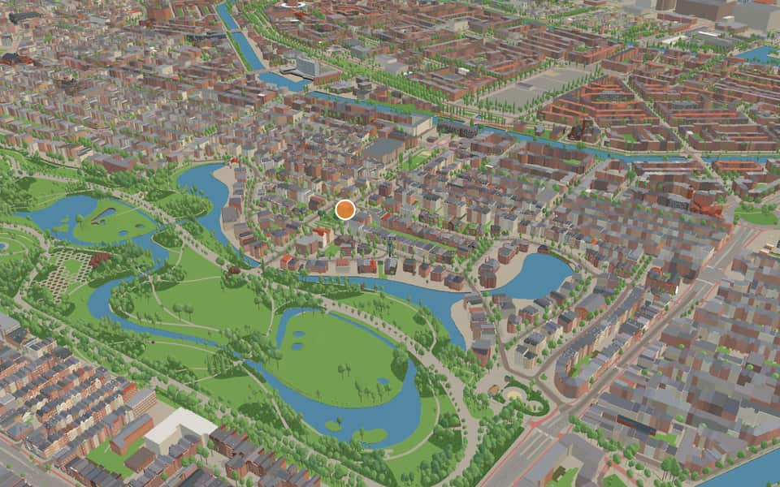
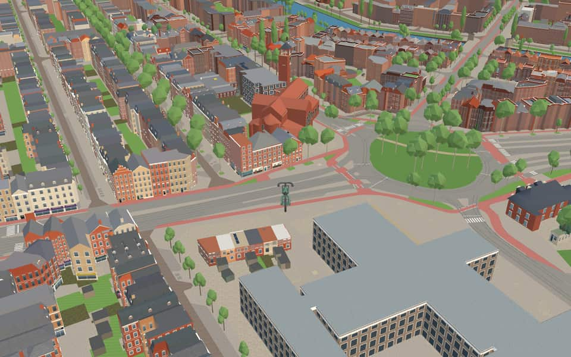
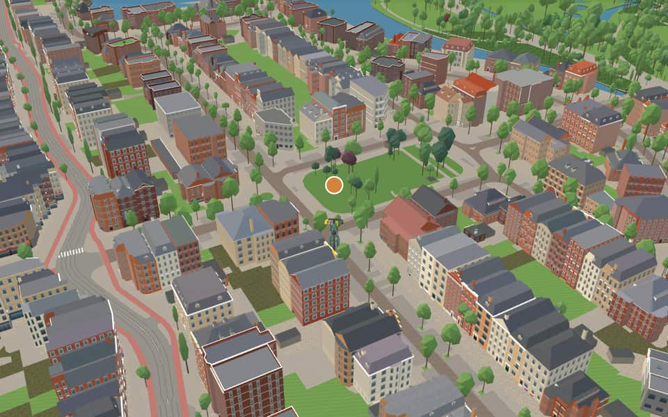

Quarter in Oud-Zuid
Willemspark
Willemspark is a neighborhood of Amsterdam, Netherlands. It is one of the most expensive neighborhoods of the city. en.wikipedia.org
The name. Laid out from 1902 between the Vondelpark and the Koninginneweg, the villa district was named after King William III. nl.wikipedia.org
Ride Willemspark4 modelled buildings · 8 facts · 30 name stories


In the game
Frames from a ride through Willemspark.



6 more photos of Willemspark


Built here
Buildings modelled one by one for the ride.
Sint-Agneskerk
- No picture yet
Emmalaan 4A-6 / Koningslaan 35, Amsterdam-Zuid (1912 brick block at the Emmalaan, south of the Vondelpark; BAG pand 0363100012236822)
- No picture yet
Koninginneweg 34, Amsterdam-Zuid (Park Plaza hotel, 1983 brick block south of the Vondelpark; BAG pand 0363100012150885)
- No picture yet
Koningslaan 28A-30, Amsterdam-Zuid (1900s pair of villa-houses on the Vondelpark's south edge; BAG pand 0363100012237339)
Did you know
Trivia the ride can show you here.
- Planned as a villa district around ponds continuing into the Vondelpark. Wikipedia
- Koningin EmmaVandals severed the statue's head and shoulders in September 1987 before it was restored after the head was found. nl.wikipedia.org
- Koningin EmmaThe monument was officially unveiled to the public in 1938. nl.wikipedia.org
- Sint-AgneskerkSint-Agneskerk honors Agnes, a young Roman martyr. nl.wikipedia.org
- Sint-AgneskerkJan Stuyt modeled the church after ancient Christian basilicas in Rome. nl.wikipedia.org
- Sint-AgneskerkThe tower was added during a second construction phase between 1930 and 1932. nl.wikipedia.org
- Sint-AgneskerkConstruction of the building spanned from 1919 until its completion in 1932. nl.wikipedia.org
- KoninginnewegA bridge over the Schinkel connecting the street to Hoofddorpweg has stood since 1927. nl.wikipedia.org
Names on the map
Where the canal, bridge and street names come from.
Canals and water
1 other canal without a recorded story
Koningsvijver
Bridges
- Anna PaulownabrugAnna Paulowna (1795-1865) married the Hereditary Prince of Orange, later King William II, on 21 February 1816. Through this marriage she received the title of Hereditary Princess. After William I abdicated on 7 October 1840, William II was inaugurated on 28 November in the Nieuwe Kerk in Amsterdam. Under Anna's influence, court life took on a more royal grandeur. Although her upbringing gave her a distant and sometimes haughty manner as queen, she was deeply involved in Dutch society. She had learned Dutch from the court teacher Arie van der Spuij and spoke it better than her husband, with whom she usually spoke French. Even as Hereditary Princess she worked with conviction for 'the people'.Bridge 136: a steel bridge for road traffic, dated 1905 in the city's bridge register.
Streets
- AmstelveensewegVillage. Before 1 January 1964 the municipality was called Nieuwer-Amstel. Before it was widened in 1898, the stretch of the road along the Vondelpark as far as the Overtoom was called Dubbele Buurt.
- BrachthuijzerstraatDaniël Brachthuijzer (1779-1832), organist of the Nieuwe Kerk and carillonneur of the Munttoren. An interpreter of Bach and Handel.
- Cornelis KrusemanstraatPainter (1797-1857) of historical and biblical scenes.
- De LairessestraatGerard de Lairesse (1641-1711), painter of allegories and of wall and ceiling paintings. He came to Amsterdam from Liège in 1667. His 'Groot schilderboek' (great book of painting) appeared in 1707.
- Derde SchinkelstraatA schinkel is a short connecting stretch between two weteringen (drainage channels), in this case the Nieuwe Meer and the Overtoom. It is thought the connection owes its name to its shape: 'schinkel' is a synonym of 'schenkel', the lower leg between foot and knee. The quay was earlier called Visserkade by Nieuwer-Amstel. The municipality of Nieuwer-Amstel had named the streets Visserstraat, Alexanderstraat (council decision of Nieuwer-Amstel, 20 October 1882) and Willemsparkstraat (council decision of Nieuwer-Amstel, 30 January 1883), but in 1896 they were changed because of confusion with names that already existed in Amsterdam.
- Des PrésstraatJosquin des Prés or Després (1450-1521), French composer and choirmaster (masses and chansons).
- DiaconessenbrugFrom 1884, for more than 100 years, a hospital stood very near this bridge: the LDI, the Lutherse Diaconessen Inrichting (Lutheran Deaconess Institution). The deaconesses, who were responsible for nursing the sick, mostly also lived in the building at Koninginneweg 1.
- DufaystraatGuillaume Dufay (1400-1474), musician from Hainaut, a well-known fifteenth-century composer, mainly of masses.
- EmmalaanAdelheid Emma Wilhelmina Theresia of Waldeck-Pyrmont (1858-1934), second wife of King Willem III, Queen Regent from 1890 to 1898, and mother of Queen Wilhelmina.
- EmmapleinAdelheid Emma Wilhelmina Theresia of Waldeck-Pyrmont (1858-1934), second wife of King Willem III, Queen Regent from 1890 to 1898, and mother of Queen Wilhelmina.
- EmmastraatAdelheid Emma Wilhelmina Theresia of Waldeck-Pyrmont (1858-1934), second wife of King Willem III, Queen Regent from 1890 to 1898, and mother of Queen Wilhelmina.
- Hendrik JacobszstraatViolin maker who made violins between 1690 and 1740 on the model of the Italian Amati.
17 more streets with a story
- Jan van GoyenkadePainter (1596-1656), mainly of landscapes.
- Johannes VerhulststraatComposer and conductor (1816-1891) of masses, overtures and songs. Conductor of the Caecilia concerts and of Felix Meritis, and around 1870 the undisputed leader of Amsterdam's musical life.
- KoninginnewegNamed after the queen of the time, Queen Emma.
- KoningslaanAfter the kings of the House of Orange-Nassau.
- LassusstraatOrlando di Lasso (1532-1594), in French Roland de Lassus, born in Hainaut, choirmaster in Rome, Antwerp and Munich, who wrote sacred and secular music. He is called the prince of music.
- LomanstraatAbraham Dirk Loman (1823-1897), theologian and writer, who arranged the old Dutch songs collected by Valerius.
- OkeghemstraatJohannes Ockeghem (1430-1495), Flemish composer, regarded as the chief master of the Netherlands School. He wrote masses, motets and chansons and is thought to have taught Obrecht.
- Oranje NassaulaanThe House of Orange-Nassau is a branch of the House of Nassau.
- Pieter LastmankadeAmsterdam painter (1583-1633), among other things of biblical scenes, and teacher of Rembrandt. By council decision of 10 January 1923 part of the quay was renamed Jan van Goyenkade.
- Prins HendriklaanHendrik, Duke of Mecklenburg-Schwerin, Prince of the Netherlands (1876-1934), who married Queen Wilhelmina in 1901.
- Saxen-WeimarlaanThe German princely house (Saxe-Weimar), related by marriage to the Dutch royal house of Orange-Nassau.
- SluisstraatAn artificial water barrier (a lock), in which opening and closing gates controls the connection between two waters.
- SophialaanQueen Sophia Frederika Mathilda of Württemberg (1818-1877), the first wife of King William III.
- Tweede SchinkelstraatThe name recalls the old roadside inn Schinkelhaven. Before 1922 the street was part of the Schinkelkade.
- ValeriuspleinAdriaan Valerius (c. 1575-1625), notary in Veere, known for the collection of folk songs he compiled, still known today as the 'Nederlandtsche Gedenck-clanck'.
- ValeriusstraatAdriaan Valerius (1575-1626), notary in Veere, known for the collection of folk songs he compiled, still known today as the 'Nederlandtsche Gedenck-clanck'.
- Waldeck PyrmontlaanA former German princely house (Waldeck and Pyrmont), from which came Queen Emma, the second wife of King William III and mother of Queen Wilhelmina.